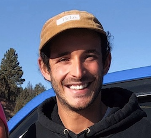

Kevin Kruelle
Friendly and engaging personality with natural relatioship building style and passion for adventure. Professional experience in music performance, hospitality, customer service, and sales.
Work Experience:
Front Desk Agent, Philadelphia Downtown Marriott, Feb. 2019 - Present
- Handle check in and check out process for 1,400+ room convention property.
- Generated $42,000 in additional hotel revenue via service-based sales technique in my first year.
- Manage customer concerns by listening and quickly resolving all issues.
- Assume concierge responsibilities when concierge is off to meet guest's needs.
- Communicate frequently with other departments to ensure guest's request's are met.
HOTBED LLC, 2016 - Present
- Co-member and performer of regional rock band. Manage business aspects of the band; distribution, profits, expenses, taxes, merchandise.
- Created website and market through all social media platforms. Network with industry professionals to book shows, interviews, and studio time.
- Co-member and performer of regional rock band. Manage business aspects of the band; distribution, profits, expenses, taxes, merchandise.
- Created website and market through all social media platforms. Network with industry professionals to book shows, interviews, and studio time.
Education:
- Cab Calloway School Of the Arts
Wilmington, DE - June 2013 - University of Delaware
Newark, DE - June 2018
Bachelor of Music, Music Management Concentration, Piano Performance - Code Differently - Front End Dev program
Jan. 19th, 2021 - Present
Skills:
- Piano Performance, Composition, Producing
- HTML, CSS, JavaScript
- Microsoft Word, Microsoft Excel, Microsoft Powerpoint, Adobe Photoshop, Final Cut Pro X, Logic Pro X
Accomplishments:
- Two-time Diving Champion, State of Delaware
- Numerous Music Theory & Piano Performance awards